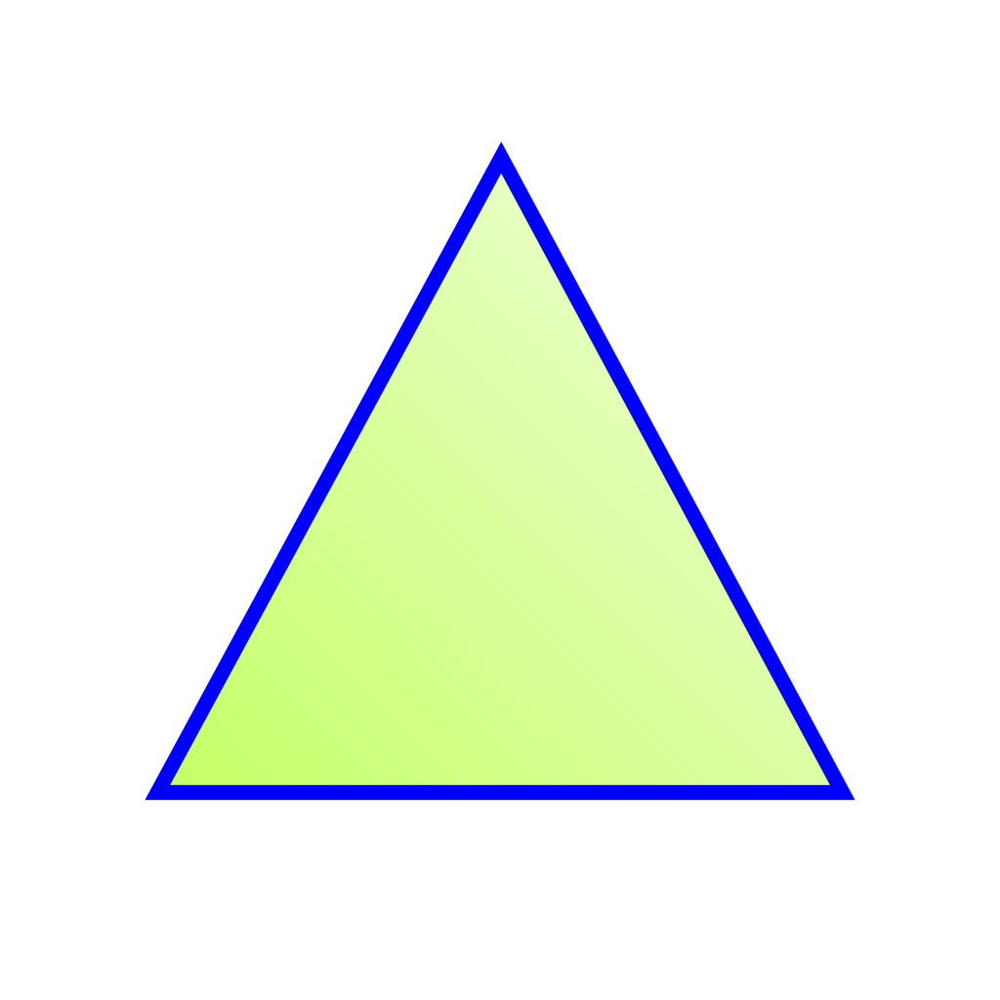

Triángulo
El triangulo es una de las tantas figuras geometricas que existen hoy en dia se puede definir en palabras sencillas como una figura que se compone de tres lados y que se unen entre si, formando tres vertices o esquinas.
Los triángulos se pueden clacificar de acuerdo a su forma, que estara dada por el tipo de angulos que se formen en él. Existen 3 tipos de triángulos: el equilátero cuya forma posee la misma longitud y mismo ángulo en cada uno de sus lados. El isósceles cuyos dos de sus lados poseen la misma longitud mayor a la del tercer lado. y por último El escaleno que posee todos lados con diferente longitud y diferentes ángulos.
Para hallar el area de un tirangulo simplemente se multiplica la base por la altura y se divide entre dos, simbolicamente
AreaT= (base*altura)/2